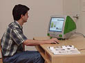

Personal
computers widely available (1978)

The
development of the personal computer provided a new tool for delivering
educational programming. The Institute began to use this new technology
to provide information about the art in its collection in 1989. The
birth of the World Wide Web in 1993 further expanded the capability
by allowing the museum to provide educational programs and such as this
one outside of the museum's walls.